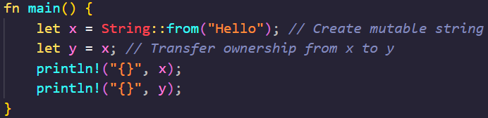
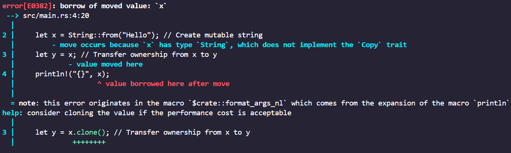
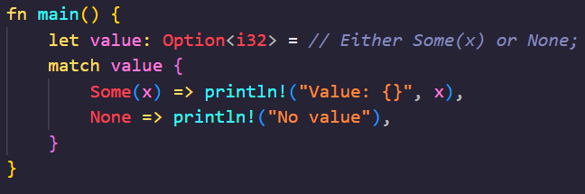
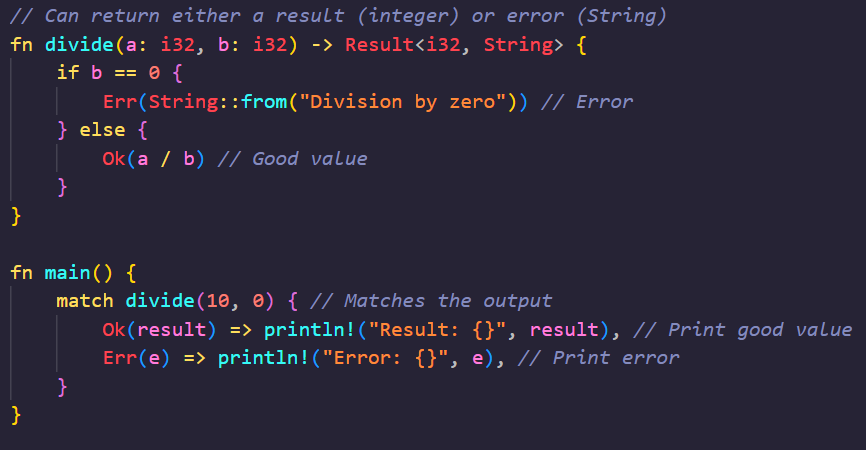
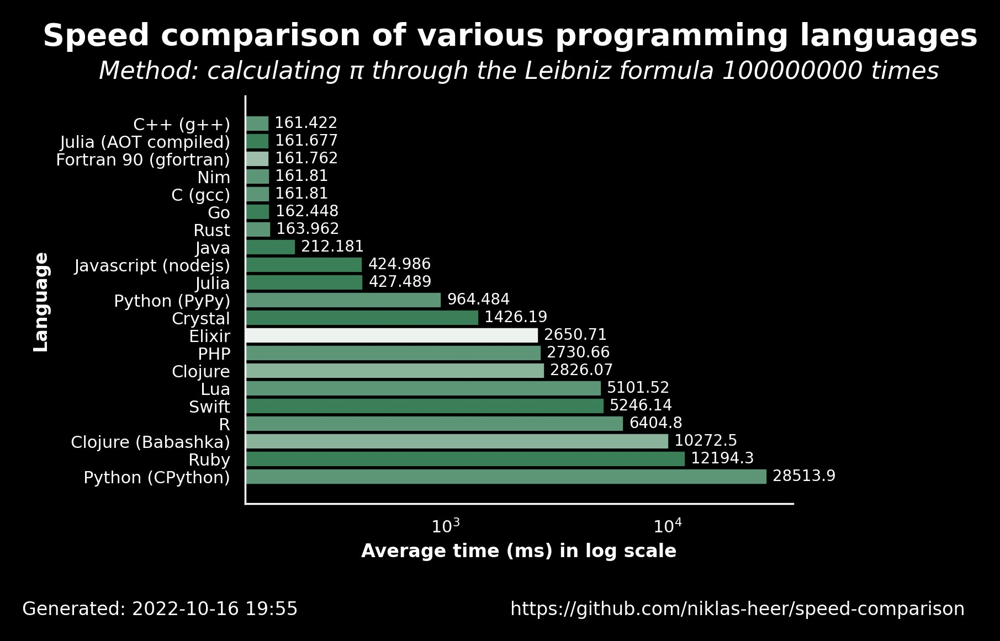

Team Tuna - Rust
Description
Rust is a modern, high-performance, systems programming language that focuses on maximizing program performance with strong type safety and concurrency features. Rust enforces memory safety like many other modern PL's, but does so without a "garbage collector", instead opting to use a "borrow checker" and an ownership model that tracks the lifetime of the memory object during compile time, making sure there are no null pointer dereferences, use-after-free bugs, and data races. For example, below is an example of the ownership model:
The output (notice how awesome the Rust debugger is):
Rust also does not have null values or pointers, instead featuring an "Option" module with "Some" value or "None":
Rust also features strong package managers, is safe and reliable, and has a modern, clean syntax that is easy to read and understand. Rust's syntax takes inspiration from multiple languages like C, Java, and Python.
Rust handles errors with with a "Result" module that transforms functions to return an enum containing either Ok(x), resembling a good value, or Err(x), resembling an error:
Rust was influenced by ideas from functional programming, meaning that it supports object immutability, higher-order functions, and pattern matching.
Rust also supports multiple object-oriented principles, like encapsulation through structs and impl (implements), polymorphism and inheritance via traits, and more, even though Rust is not an object-oriented language.
Rust features a construct known as a "macro". Macros, in simple terms, are code that generates other code (metaprogramming). Macros, unlike functions, work at the syntax level before compilation. Because of this, code is generated during compile time, allowing errors to be caught during compilation, and creates no runtime overhead, allowing the program to run faster. Macros are also more flexible than functions since they can take a variable number of arguments (see println!), implement a trait on a type (similar to Java Intergaces), or use custom syntax. They are denoted by the exclamation mark after the macro's name and before the parantheses.
Rust is very popular for systems programming, like building computer system software, web servers, game engines, and other services that rely on performance-critical code. For example, here is an example of a speed comparison between multiple languages solving the same problem:
History
Rust was developed by Graydon Hoare, a Mozilla employee, in 2006 as a personal project. His goal for this project was to design a systems programming language that avoided common errors found in C++, like segmentation faults and undefined behavior. In 2009, Mozilla officially sponsored Graydon's project. Mozilla's goal with the project was to create a language that would power the next generation of high-performance applications. After many years of development and testing, Mozilla released the first stable version of Rust in 2015.
Timeline:
- 2010: Rust's ownership system was developed, although not fully completed since Rust still used a garbage collector.
- 2011: Rust's syntax and semantics were (pretty much) fully developed and tested, and the language's backend was switched to LLVM for compilation. LLVM is used by popular languages like C, C++, Swift, and Go.
- 2012: The first public non-stable release, Rust 0.1, was released in January.
- 2013: Rust's ownership model made major improvments, which led to the removal of the garbage collector.
- 2013: Rust removed pure functions (which where declared with "pure") and specialized syntax support for channels and various pointer types to simplify the language.
- 2013: Graydon Hoare stepped down from the Rust development team.
- 2015: Rust 1.0 officially launched as the first stable public release.
- 2016: Rust's real-world usage was demonstrated in the Servo project, Mozilla's experimental web browser.
- 2020: The "Rust for Linux" project began, whose goal is to add Rust as a programming language that can be used in the Linux kernel.
- 2023: The first drivers written in Rust were accepted by Linus Torvalds, leader of the Linux kernel project.
Rust is currently being rapidly adopted by a multitude of companies due to its strong performance and capabilities.
Fun Fact: Amazon developers cited that Rust uses half as much electricity as similar code written in Java, only being behind C in efficiency.
Links
Translators & Instructions
rustc / cargo
- Go to rust-lang.org and install rustup.
- If you're on Windows or Mac, there's an .exe file to install.
- If on Windows Sybsystem for Linux, run the following command: curl --proto '=https' --tlsv1.2 -sSf https://sh.rustup.rs | sh
- If on Linux, run the following command in terminal: curl https://sh.rustup.rs -sSf | sh
- Once everything is installed, to start a new package, run "cargo new" followed by a name for the package. This creates a working directory for you to work in.
- If the cargo command does not work, run "sudo apt install build-essential". This is a C linker that is necessary for cargo.
- Then, begin working on a rust program in the "src" directory.
- Once done with your program, from the "src" directory, run "cargo build" to compile the project. If any errors show up, fix them.
- Then, run "cargo run" to run the program.
Introductory Programs
Hello World Function Call


Iterate through a 2 dimensional array


Fibonacci Sequence


Threads in Rust


Complex Program
Code for Complex ProgramComparison To Similar Languages
| Feature | Rust | C | C++ | Java |
|---|---|---|---|---|
| Paradigms | Systems programming, functional, imperative | Procedural, imperative | Multi-paradigm: procedural, object-oriented, generic | Object-oriented, some functional features |
| Use Cases | Systems programming, web servers, CLI tools, game engines, blockchain | OS development, embedded systems, hardware programming | Game engines, real-time systems, performance-critical applications | Enterprise software, Android apps, web servers |
| Memory Management | Ownership with borrowing/lifetimes, no garbage collector | Manual memory management | Manual (pointers) and automatic (smart pointers in modern C++) | Automatic garbage collection via JVM |
| Type System | Strong, static, expressive (generics, traits, lifetimes) | Weak, static | Strong, static (templates, polymorphism, inheritance) | Strong, static (generics with type erasure) |
| Concurrency | Safe concurrency without data races, enforced at compile time | Libraries like pthreads, prone to data races | Libraries available, but thread safety depends on the programmer | Built-in threading model, runtime safety with `synchronized` |
| Syntax Complexity | Modern, expressive, concise but strict | Simple, minimal | Complex due to advanced features like templates and manual memory management | Simple but verbose, designed for readability |
| Compiled or Interpreted | Compiled to native machine code | Compiled to native machine code | Compiled to native machine code | Compiled to bytecode and interpreted/compiled by JVM |
| Performance | High, comparable to C/C++, optimized with zero-cost abstractions | High, close to the hardware | High, close to C but can be slower due to abstraction overhead | Slower than Rust/C/C++ due to JVM overhead |
| Learning Curve | Steep (ownership model, strict compiler rules) | Moderate (simpler but requires understanding of manual memory management) | Steep (complex syntax, templates, and object-oriented programming) | Moderate (garbage collection and extensive documentation help beginners) |
| Platform Independence | Cross-compilation supported but output binaries are platform-specific | Platform-specific binaries | Cross-compilation supported but output binaries are platform-specific | Fully portable; "write once, run anywhere" via JVM |
| Unique Strengths | Ownership for memory safety, zero-cost abstractions, fearless concurrency | Simple and fast for low-level hardware programming | Combines high-level abstraction with low-level control, wide community support | Rich ecosystem for enterprise development, platform independence, automatic garbage collection |